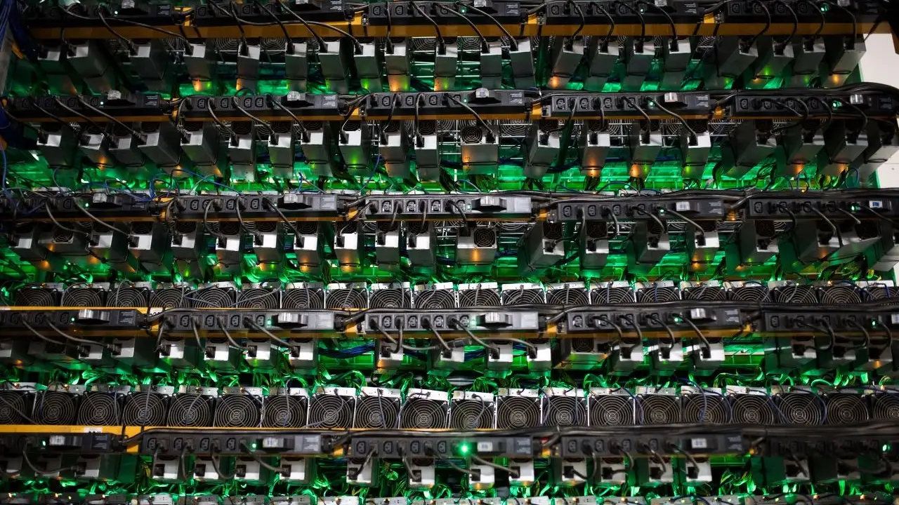

Lektion 3: Wie investiere ich mein Geld in Krypto?
Kryptowährungen sind eine aufstrebende Anlageklasse, die durch Blockchain-Technologie ermöglicht wird. Hier erfahren Sie, wie Sie in Kryptowährungen investieren können.
A. Was ist eine Kryptowährung?
Eine Kryptowährung ist eine digitale oder virtuelle Währung, die Kryptografie zur Sicherheit verwendet. Im Gegensatz zu traditionellen Währungen sind Kryptowährungen dezentralisiert und basieren auf der Blockchain-Technologie.
Beispiel: Bitcoin & Ethereum


Stellen Sie sich Bitcoin als digitales Gold und Ethereum als die führende Plattform für dezentrale Anwendungen vor. Beide Kryptowährungen haben unterschiedliche Anwendungsfälle und Funktionen.
B. Wie funktioniert eine Kryptowährung?
Kryptowährungen funktionieren durch ein Netzwerk von Computern, die Transaktionen verifizieren und in der Blockchain aufzeichnen. Diese Technik sorgt für sichere, dezentralisierte Zahlungen.
Beispiel: Blockchain-Technologie

Die Blockchain ist ein digitaler Ledger, der Transaktionen aufzeichnet. Jede neue Transaktion wird in einem Block gespeichert, der kryptografisch mit dem vorherigen Block verknüpft ist.
C. Wie kann ich Kryptowährungen kaufen?
Der Kauf von Kryptowährungen erfolgt in der Regel über Börsen wie Binance oder Coinbase. Sie erstellen ein Konto, zahlen Geld ein und kaufen die gewünschte Kryptowährung.
Beispiel: Kauf von Bitcoin
Wenn Sie Bitcoin kaufen möchten, registrieren Sie sich bei einer Kryptowährungsbörse, überweisen Geld auf Ihr Konto und führen den Kauf durch. Danach speichern Sie Ihre Bitcoin sicher in einer Wallet.
D. Was sind die Risiken?
Investitionen in Kryptowährungen sind volatil und risikoreich. Preisschwankungen können extrem sein, und regulatorische oder technische Risiken können zu Verlusten führen.
Beispiel: Volatilität

Kryptowährungen sind bekannt für ihre extreme Volatilität. Der Wert kann innerhalb weniger Stunden stark schwanken, was sowohl Gewinn- als auch Verlustmöglichkeiten bietet.
E. Wie funktioniert das Mining von Kryptowährungen?
Beim Mining handelt es sich um den Prozess, bei dem neue Kryptowährungseinheiten erstellt und Transaktionen in der Blockchain verifiziert werden. Dies erfolgt durch komplexe mathematische Berechnungen, die von speziellen Computern ausgeführt werden.
Beispiel: Bitcoin Mining
Beim Bitcoin-Mining konkurrieren Miner darum, komplexe kryptografische Probleme zu lösen. Der erste Miner, der das Problem löst, erhält neue Bitcoins als Belohnung. Dies erfordert erhebliche Rechenleistung und Energie.
F. Was sind Wallets und wie bewahre ich meine Kryptowährungen sicher auf?
Eine Wallet ist eine digitale Geldbörse, die es Ihnen ermöglicht, Kryptowährungen zu speichern, zu senden und zu empfangen. Es gibt verschiedene Arten von Wallets, darunter Hardware-Wallets, Software-Wallets und Paper Wallets.
Beispiel: Hardware-Wallet

Ein Hardware-Wallet ist ein physisches Gerät, das Ihre privaten Schlüssel offline speichert und somit eine hohe Sicherheit bietet. Im Gegensatz zu Online-Wallets ist ein Hardware-Wallet weniger anfällig für Hacks.
G. Regulierung von Kryptowährungen
Die Regulierung von Kryptowährungen variiert weltweit. Einige Länder unterstützen Kryptowährungen, während andere strikte Regeln oder sogar Verbote erlassen. Die rechtliche Landschaft entwickelt sich ständig weiter.
Beispiel: Regulierung in der Europäischen Union

In der Europäischen Union arbeitet die EU an der Entwicklung eines einheitlichen Regelwerks für Kryptowährungen, das mehr Sicherheit und Vertrauen für Investoren schaffen soll. Dies beinhaltet Maßnahmen zur Bekämpfung von Geldwäsche und zur Verbesserung der Markttransparenz.
H. Die Zukunft der Kryptowährungen
Die Zukunft von Kryptowährungen bleibt unsicher, aber viele Experten glauben, dass die Blockchain-Technologie und Kryptowährungen in den kommenden Jahren weiter an Bedeutung gewinnen werden. Bereiche wie Dezentralisierte Finanzen (DeFi) und digitale Zentralbankwährungen (CBDCs) sind nur einige der möglichen Entwicklungen.
Beispiel: Dezentralisierte Finanzen (DeFi)

DeFi nutzt Blockchain-Technologie, um Finanzdienstleistungen ohne traditionelle Vermittler wie Banken anzubieten. Dies könnte die Art und Weise, wie Menschen Kredite aufnehmen, Zinsen verdienen und handeln, revolutionieren.